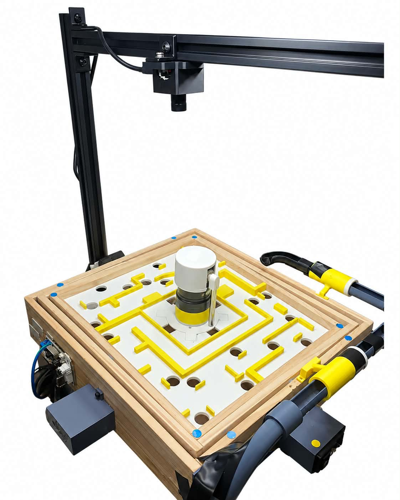
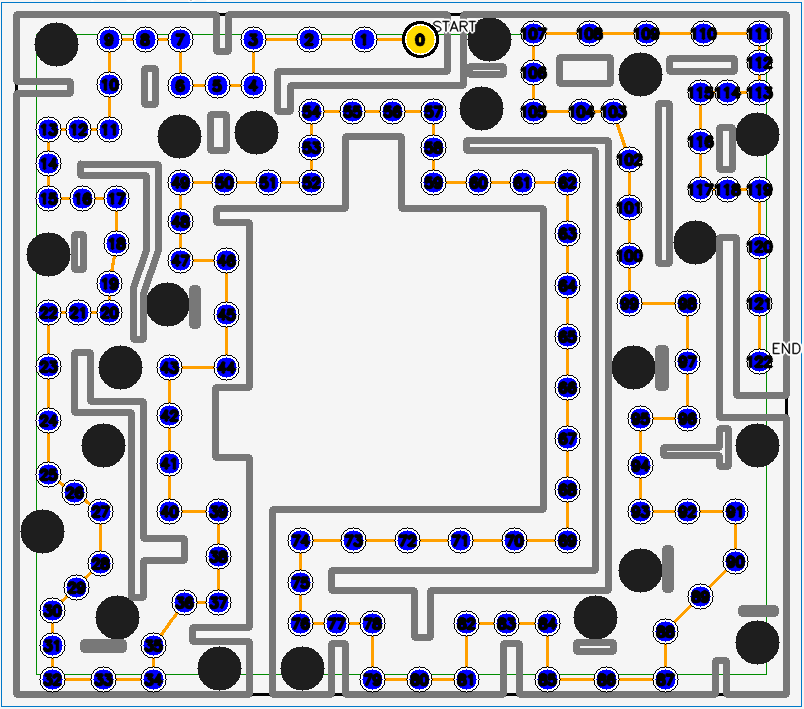
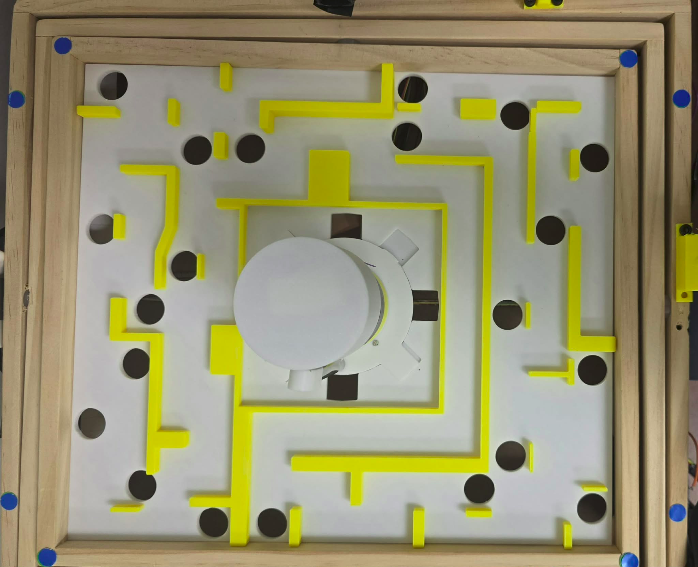
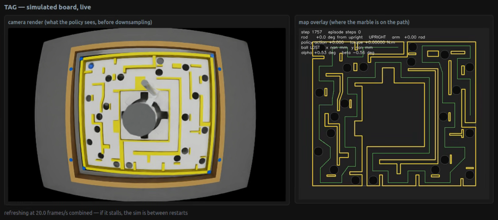
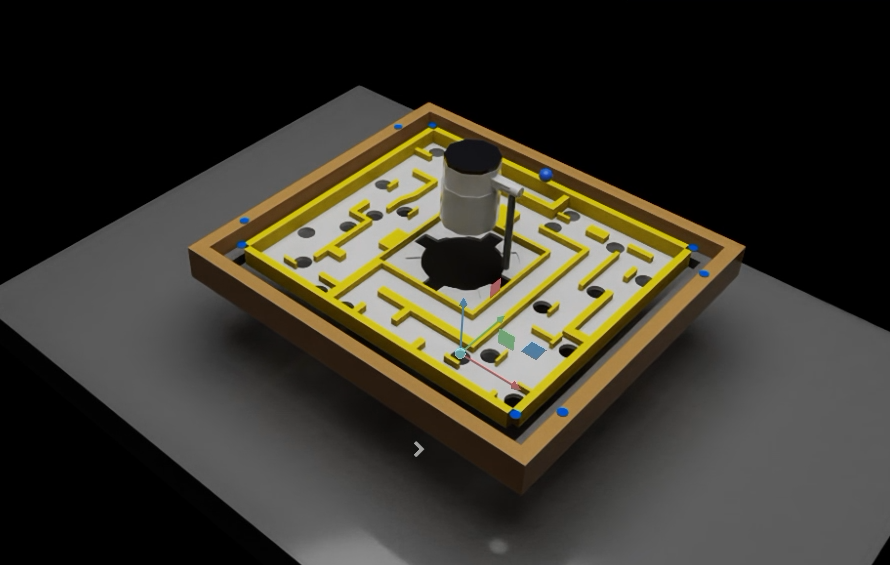
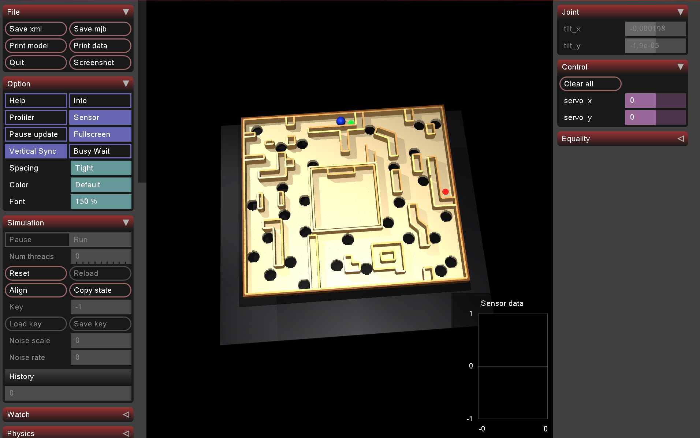
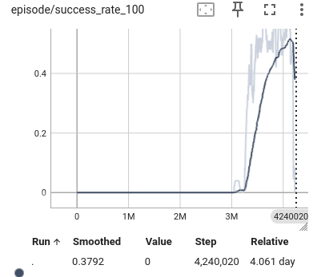
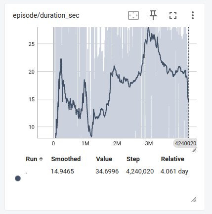
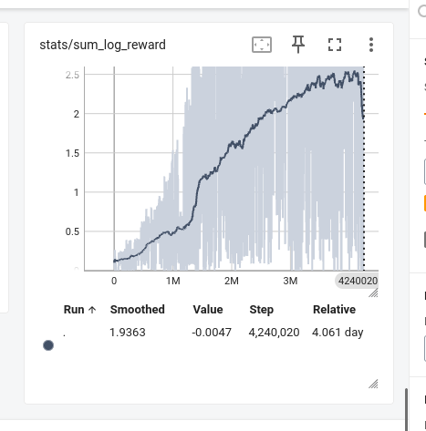

COOL Autonomy Lab · The University of Texas at Austin
TAG
Testbed for Autonomous Games
Labyrinth with a Top-Mounted Rotary Inverted Pendulum
A real reinforcement-learning testbed that couples a two-axis marble labyrinth with a rotary inverted pendulum, combining vision-based maze control, disturbance-aware learning, physics simulation, and embedded pendulum control.
Control, Optimization, and Online Learning (COOL) for Autonomy Lab
Department of Aerospace Engineering and Engineering Mechanics
Department of Aerospace Engineering and Engineering Mechanics
TAG in action
Real hardware and integrated simulation
REAL TAG
ISAAC SIM

TAG system overview
One platform, two learning problems, one mechanically coupled structure.
Two Hiwonder servos tilt the maze, an overhead camera tracks the marble, and a top-mounted rotary inverted pendulum injects reaction torque and vibration into the same board. DreamerV3 selects maze pitch and roll setpoints, while the pendulum is controlled independently and acts as a dynamic disturbance to the marble task.

Overhead camera
→Marble detector + state estimator
→ROS 2 / TCP bridge
⇄DreamerV3 GPU learner
→Hiwonder servo driver
→Two-axis maze
Top-mounted RIP → reaction torque + vibration → maze
Geometry and perception
The control state is tied to the physical maze.
The software geometry, path, holes, walls, board pose, and measured marble motion must share a consistent board coordinate system. The latest observation also includes measured marble velocity because position alone cannot reveal whether the marble is accelerating toward a hole or braking before a corner.



Simulation environment
Simulation accelerates experience collection without claiming perfect zero-shot transfer.
The integrated Isaac Sim model places the labyrinth, marble, tilting board, and top-mounted Furuta pendulum in the same rigid-body environment. Simulation allows continuous rollouts, automatic resets, broader parameter randomization, and early rejection of unsafe policies before they reach hardware. Real data is still required to correct friction, contact, actuator response, vibration, timing, and structural mismatch.
ISAAC SIM

POLICY VIEW
MUJOCO

Maze control · DreamerV3
DreamerV3 learns a recurrent world model and chooses board-angle setpoints.
The high-level maze policy receives a local image together with board angles, marble position, measured velocity, future path points, progress, and optional pendulum/vibration data. It outputs two normalized actions that are mapped to safe pitch and roll setpoints.
CNN image encoder
Compresses local wall, corner, hole, and visual context.
MLP vector encoder
Processes angles, position, velocity, path, progress, and optional RIP data.
RSSM world model
Maintains recurrent memory for momentum, actuator delay, impacts, and disturbance phase.
Actor + critic
Train on imagined latent trajectories so physical replay can support many learning updates.
Why recurrent instead of a Transformer now? The current task is a compact real-time control loop with short temporal dependencies. The recurrent world model is simpler to run and already captures history-dependent effects; a Transformer remains a future option if longer context becomes necessary.
Furuta pendulum · TQC
One nonlinear policy for swing-up, capture, balance, and moving-board disturbance rejection.
The pendulum is underactuated: the rotary arm is driven while the pendulum joint moves freely. TAG uses Truncated Quantile Critics (TQC), a model-free off-policy actor–critic method for continuous actions, instead of separate swing-up and balancing controllers with hand-designed switching logic.
Two hidden layers of 64 ReLU units. A tanh-squashed Gaussian produces a bounded continuous action in [−1, 1].
Predict quantiles of long-term return and truncate optimistic upper quantiles during target construction.
Only the actor is exported after training; critics are discarded for real-time embedded inference.

Moving board + sim-to-real
Transfer preserves useful behavior while progressively increasing disturbance.
The pendulum controller treats maze roll and pitch as external disturbances. Training progresses from a pretrained swing-up and balance policy to mild motion, larger roll/pitch excursions, faster two-axis motion, and finally robustness/domain randomization. Actor transfer is combined with critic reset and staged warm-up to reduce catastrophic forgetting.
1Swing-up + balancepretrained stationary/mild-base policy
2Mild board motionretain previously learned behavior
3Larger roll + pitchprogressively increase disturbance
4Faster two-axis motionverify rates up to ~120°/s
5Domain randomizationdelay, dynamics, sensing, actuator mismatch
Hardware deployment
The trained TQC actor runs directly on the ESP32.
The actor is exported from the Python checkpoint into a C-compatible header. On hardware, the controller reads the AS5600 pendulum encoder, AS5048A rotary-arm encoder, and BNO086 board orientation/rates, builds the same normalized observation used in simulation, evaluates the actor, and converts its output to a motor-voltage command.
TQC checkpoint→extract actor→C header→ESP32 firmware→motor command
~200 Hzembedded control frequency
~5 mscontrol period
12-Dpendulum deployment observation
Experimental results
Preliminary maze learning and robust pendulum simulation results.
The manuscript intentionally separates preliminary maze curves from stronger pendulum verification results. The maze plots come from one baseline run and are not presented as final performance claims.
4,240,020maze environment steps shown
0.3792smoothed maze success value at the shown step
~96%pendulum sustained success at the hardest reported simulated condition
±15°simultaneous roll / pitch verification range
~120°/smaximum reported board rate in final verification
10 Vselected maximum motor command



Maze-result caution. Only one long baseline run is shown. Final evaluation should use repeated runs, fixed starting positions, and report success rate, completion time, maximum progress, hole rate, and physical training steps.
Generalization + future work
From one board to reusable skills across maze configurations.
The next research direction is a map-conditioned controller that learns reusable acceleration, braking, turning, recovery, hole-approach, and wall-contact skills across simulated mazes, then adapts with a smaller amount of real replay. Planned comparisons include measured-velocity input, physics hints, residual dynamics, MuJoCo pretraining, and hybrid skill pretraining.
Use a simple ball-on-plate model for the easy dynamics and a learned residual for friction, impacts, delay, vibration, and unmodeled effects.
Condition one policy on local imagery and future path geometry rather than a fixed map identity.
Compare pendulum-disabled and pendulum-active conditions and test whether disturbance-aware observations or coupled training improve maze performance.